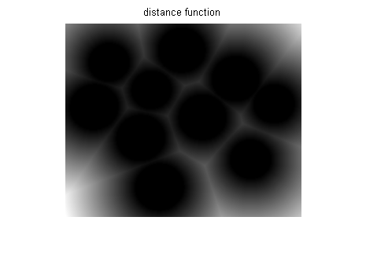
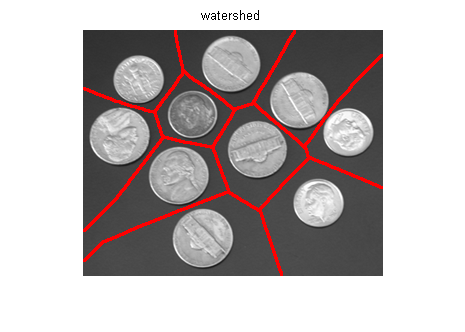
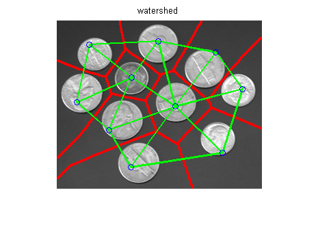

Contents
function demoImRAG(varargin)
Read input image
img = imread('coins.png');
bin = imopen(img > 80, ones(3, 3));
imshow(bin);
compute Skeleton by Influence Zone (SKIZ)
dist = bwdist(bin);
imshow(dist, []); title('distance function');
distf = imfilter(dist, ones(3, 3)/9, inf);
wat = watershed(distf, 4);
ovr = imOverlay(img, imdilate(wat==0, ones(3, 3)));
figure;
imshow(ovr);
title('watershed');
 
Region adjacency graph
[n e] = imRAG(wat);
hold on;
for i = 1:size(e, 1)
plot(n(e(i,:), 1), n(e(i,:), 2), 'linewidth', 2, 'color', 'g');
end
plot(n(:,1), n(:,2), 'bo');
